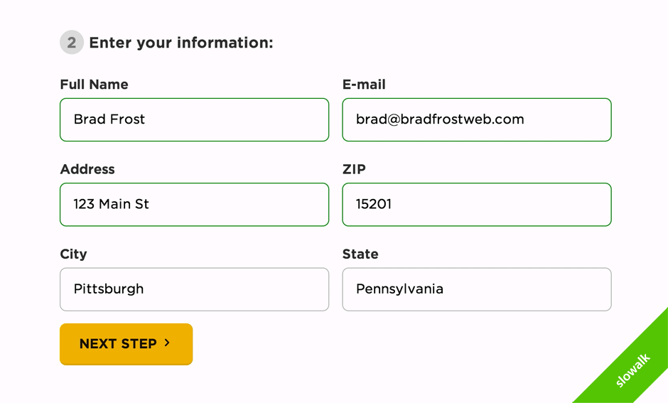
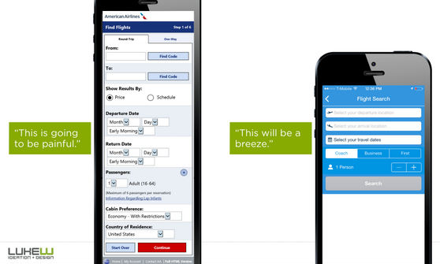
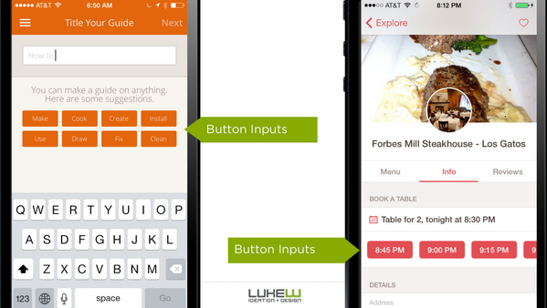
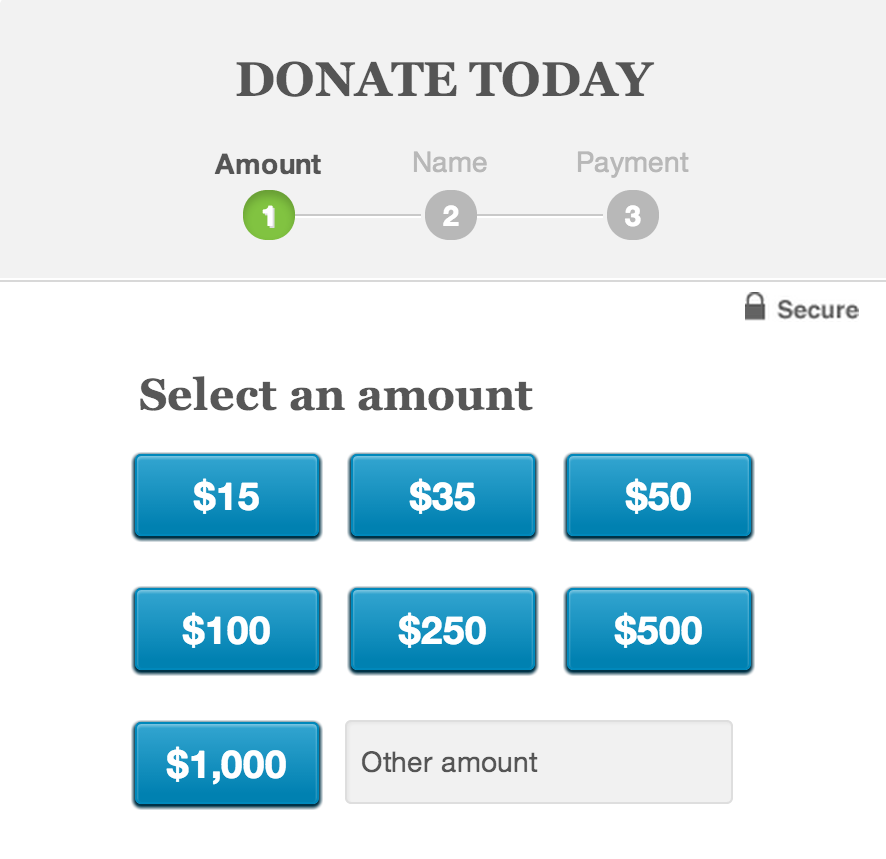
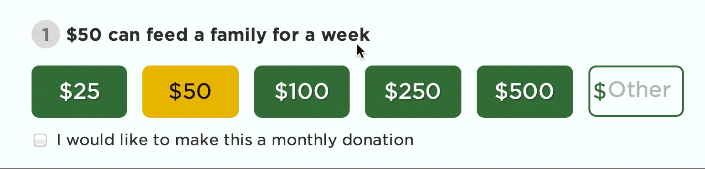
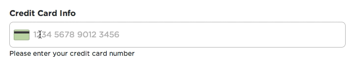
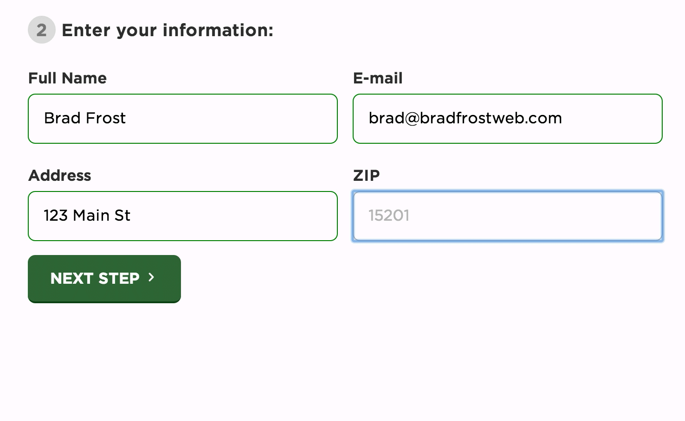

효과적인 후원페이지 만들기
2014-11-12
우리는 웹사이트를 서핑하면서 수많은 서식(Form)을 사용합니다. 회원가입, 결제, 후원페이지 등 서식 페이지는 개인정보나 금액이 오고 가기 때문에 매우 중요합니다. 하지만 우리는 복잡한 서식페이지에 들어가면 작성을 포기하거나, 실수를 합니다.
이런 상황에는 사용자의 책임도 있지만, 제작자들의 책임이 더 크다고 생각합니다. 그럼 제작자 입장에서 사용자들이 편하게 사용할 수 있는 서식페이지 만들라면 어떻게 해야 할까요?
웹디자이너 브래드 프로스트(Brad Frost) 씨는 피츠버그푸드뱅크(Pittsburgh Food Bank)의 후원페이지를 효과적으로 리디자인했는데요.
그는 다음 10가지 사항을 고려해서 디자인했습니다.

- 눈에 잘 띄는 곳에 배치하기
- 불필요한 요소 제거하기
- 내용이 많은 페이지는 단계로 나눠서 구성하기
- 입력서식을 버튼화하기
- 예시와 가이드를 제공하기
- 뚜렷하게 강조하기
- 유효성 검사 바로 하기
- 입력서식의 개 수 줄이기
- 서식에 맞는 종류(type) 정하기
- 도시정보를 자동으로 입력하기
1. 눈에 잘 띄는 곳에 배치하기
그는 모든 페이지 하단에 후원양식을 제공했습니다. 자칫 과하다고 생각할 수 있지만, 후원양식이 차지하는 공간이 작기 때문에 그런 느낌은 없습니다. (웹사이트 보기)
2. 불필요한 요소 제거하기
사용자들이 서식에 집중할 수 있는 여건을 만들었습니다. 그는 사이드바와 같은 보조적인 기능들은 잠시 제거했습니다.
3. 내용이 많은 페이지는 단계로 나눠서 구성하기
서식을 좀 더 간단하게 하는 방법은 한 화면에 다 보여주기 보지 않고 단계를 나눠서 보여주는 것입니다.

4. 입력서식을 버튼화하기
버튼은 셀렉트박스, 체크박스 등 어떤 입력서식 보다 사용성이 좋으며, 눈길을 끕니다. 그는 후원금액을 사용자들이 더욱 쉽게 누를 수 있도록 버튼으로 디자인했습니다.

5. 예시와 가이드를 제공하기
많은 사람은 푸드뱅크의 후원양식이 어떻게 구성되어 있는지 모릅니다. 제작자들은 대표적인 예시와 가이드를 제공하여 사용자를 도와야 합니다. 예를 들어 오바마 대통령의 캠페인 사이트는 일반적인 기부금액을 정해서 버튼으로 제공합니다.

6. 뚜렷하게 강조하기

금액에 마우스를 올리면, 상단에 그 금액으로 얼마나 도움을 줄 수 있는지 설명이 나옵니다. 작은 기능이지만, 후원자들이 자신의 금액이 어떻게 쓰이는지 알 수 있기에 후원을 유도할 수 있습니다.
7. 유효성 검사 바로 하기
수많은 입력서식을 모두 입력하고 유효성을 검사하는 것은 비효율적입니다. 파슬리(Parsley) 라이브러리를 사용해, 사용자가 입력한 직후에 유효성검사를 하면 더 효율적일 것입니다.
8. 서식의 개 수 줄이기
이 리디자인의 중요한 목표는 최대한 입력서식을 줄이는 것이었습니다. 예를 들어 신용카드 서식을 다음 그림과 같이 한 칸으로 전부 해결할 수도 있습니다.

9. 서식에 맞는 종류(type) 정하기
html5에서 제공하는 서식 종류(type)을 잘 사용하면 데스크탑 뿐만 아니라 모바일에서 더 편한 사용성을 제공할 수 있습니다. 아래 서식들을 눌러보세요. (아쉽게도 모든 브라우저를 지원하지는 않습니다.)
10. 도시정보를 자동으로 입력하기
미국에서는 주소를 입력할 때 zip코드를 사용하는데, 이 zip코드를 입력하면 자동으로 나머지 주소가 생성하는 방법입니다. 우리나라는 우편번호로 적용할 수 있겠네요.

저는 서식 작성 중에 초기화되는 일도 있었고, 후원페이지에서 두 번 결제되는 참사도 겪었습니다. 이럴 때 훈훈한 마음과 기대는 결국 분노와 짜증으로 바뀌기도 합니다. 위에서 언급한 내용은 어쩌면 우리 모두가 이미 알고 있는 것일지도 모릅니다. 단지 귀찮을 뿐이지요. 하지만 우리가 이런 사소한 배려와 함께 디자인한다면, 사용자들은 감동을 느끼고 감사하는 마음을 가질 것입니다.
출처: Brad Frost
이 글은 제가(원숭이발자국) 슬로워크에서 쓴 글입니다.
원문보기